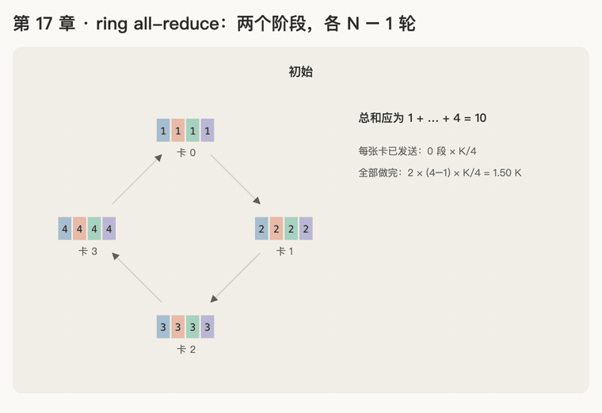

第 17 章 · 集合通信：五个动词和它们的代价
本地运行
git clone https://github.com/wikieden/pytorch-inside-out
cd pytorch-inside-out/code/notebooks
pip install jupyterlab torch numpy
jupyter lab ch17_collectives.ipynb也可以下载后直接用 VS Code 打开 .ipynb 运行。需要 GPU 的章节在 Colab 里选「代码执行程序 → 更改运行时类型 → GPU」。
本章回答：多卡之间交换数据靠哪几种"集合操作"？all-reduce、all-gather、reduce-scatter 各是什么结果？ring all-reduce 为什么每张卡只要发约 2 倍数据？哪个并行方法用哪个操作？
讲解日期：2026-11-14 · 上一章：第 16 章 进程模型 · 下一章：第 18 章 DDP
对应原文：Ultra-Scale Playbook §A0「Parallel Programming Crash Course」（distributed-pretraining/materials/text/ultrascale-playbook.md：Broadcast 第 3297 行、Reduce & AllReduce 第 3341 行、Gather & AllGather 第 3398 行、Scatter & ReduceScatter 第 3458 行、Ring AllReduce 第 3528–3575 行、Barrier 第 3576 行、NCCL 第 3608 行）；本章输出在本机 Gloo 2 进程上跑过本章缩写：K = 要通信的张量的元素个数；N = 参与的进程数（卡数）；DP / TP / PP / EP = Data / Tensor / Pipeline / Expert Parallelism（数据 / 张量 / 流水线 / 专家 并行）；全部缩写见 附录 · 缩写与术语表
讲解
第一步：五个动词（2026-11-14）
类比：小组作业。 4 个组员各算了一份数，要合起来。
| 操作 | 小组作业里 | 前 → 后（2 个进程实测） |
|---|---|---|
| all_reduce（全归约） | 大家把数加起来，每人都拿到总和 | rank 0 [1, 2]，rank 1 [2, 4] → 两人都是 [3, 6] |
| all_gather（全收集） | 大家把自己的那份拼起来，每人都拿到完整的 | 两人都是 [[1, 2], [2, 4]] |
| reduce_scatter（归约散射） | 先加起来，但每人只拿一段 | rank 0 [10, 20]，rank 1 [20, 40] → 和是 [30, 60]，rank 0 拿 [30]，rank 1 拿 [60] |
| broadcast（广播） | 一个人的数复制给所有人 | 从 rank 1 广播：两人都是 [1.0] |
| all_to_all（全交换） | 每人把自己的数切成 N 份，第 i 份发给第 i 个人 | MoE 里把 token 发给对应专家（第 21 章） |
还有 barrier（栅栏）：什么数据都不传，只是"所有人都到这儿了再往下走"。
y = x.clone(); dist.all_reduce(y) # 默认求和（op=dist.ReduceOp.SUM）
dist.all_gather(out_list, x)
dist.reduce_scatter_tensor(out, inp)
dist.broadcast(t, src=1)
集合操作的铁律：所有进程都要调用、按同样的顺序调用。有一个 rank 少调一次或顺序不同，其他 rank 会一直等，程序卡死（hang，第 22 章）。
一句话：all_reduce 加起来人人有，all_gather 拼起来人人有，reduce_scatter 加起来各拿一段，broadcast 一份复制给所有人；所有 rank 必须按同样顺序调用。
第二步：all_reduce = reduce_scatter + all_gather（2026-11-14）
把 all_reduce 拆成两半：
- reduce_scatter：大家把各自的数加起来，但每人只负责其中 \(\frac{1}{N}\) 段，最后每人手里有一段"完整的和"；
- all_gather：每人把自己那段完整的和发给所有人，拼回完整的结果。
两步做完，效果和 all_reduce 一样。这个拆法非常重要：ZeRO / FSDP（第 19 章）正是把 all_reduce 拆开，中间插进"只更新自己那一段参数"，从而省显存。
一句话：all_reduce 可以拆成 reduce_scatter + all_gather；FSDP 就是在两半中间做事。
第三步：ring all-reduce 的代价（2026-11-14）
最笨的办法：每人把整份数据发给其他所有人，每人要发 \((N-1) \times K\)。卡越多越慢。
ring（环）：N 个人围成一圈，每人只和左右邻居传。数据切成 N 段。
- reduce_scatter 阶段：传 N − 1 轮，每轮每人发一段（\(\frac{K}{N}\) 个数）给右边，同时从左边收一段加到自己这段上。N − 1 轮后每人手里有一段完整的和；
- all_gather 阶段：再传 N − 1 轮，把完整的段转一圈。
每人一共发送：
（Playbook 第 3561–3566 行）读法："两个阶段，各 N − 1 轮，每轮发 K / N 个数"。和卡数几乎无关：4 卡是 \(2 \times 3/4 K = 1.5K\)，64 卡是 \(2 \times 63/64 K ≈ 1.97K\)。
数字演示：7B 参数的梯度，bf16（2 字节），K × 2 字节 = 14 GB。ring all-reduce 每张卡收发约 28 GB。机间网络 400 Gb/s ≈ 50 GB/s，约 0.56 秒；机内 NVLink 约 450 GB/s（单向，H100），约 0.06 秒。所以通信一定要和计算重叠（第 18 章），而且机间流量能省就省（第 19 章 HSDP）。
一句话：ring all-reduce 每卡发约 2K（和卡数几乎无关）；reduce_scatter、all_gather 各约 K。
第四步：哪种并行用哪个动词（2026-11-14）
| 并行方法 | 主要的集合操作 | 什么时候发 |
|---|---|---|
| DDP（第 18 章） | all_reduce 梯度 | 反向时，按桶 |
| FSDP / ZeRO-3（第 19 章） | all_gather 参数、reduce_scatter 梯度 | 每层前向前 / 反向后 |
| TP 张量并行（第 20 章） | all_reduce 或 all_gather + reduce_scatter 激活 | 每层里 |
| PP 流水线并行（第 21 章） | send / recv（点对点） | 段与段之间 |
| EP 专家并行（第 21 章） | all_to_all | MoE 层前后 |
| 初始化 | broadcast 参数 | 开始时 |
一句话：DDP 用 all_reduce，FSDP 用 all_gather + reduce_scatter，TP 在层内通信，PP 点对点，MoE 用 all_to_all。
动画演示：ring all-reduce

可交互版：animations/17-ring-allreduce.html。滑块调卡数 N（3–6）。
怎么看：
- N 张卡围成一圈，每张卡的数据切成 N 段（每段一种颜色）；
- 前 N − 1 轮（reduce_scatter）：每张卡把一段发给右边，右边加到自己那段上；每段的数字累加；
- 后 N − 1 轮（all_gather）：把完整的段转一圈；
- 下方累计"每张卡发了多少"，最后等于 2(N − 1) × K / N。
练习与作答记录
题 1：3 个进程，各有 [1, 2, 3]、[4, 5, 6]、[7, 8, 9]。all_reduce（求和）后每人是什么？reduce_scatter 后每人拿到什么？
作答：（待作答）
题 2：为什么说 all_reduce = reduce_scatter + all_gather？用题 1 的数说明。
作答：（待作答）
题 3：K = 10 亿个数，N = 8 张卡，ring all-reduce 每张卡要发送多少个数？换成 N = 1024 呢？
作答：（待作答）
口诀
all_reduce 加起来人人有，all_gather 拼起来人人有，reduce_scatter 加完各拿一段，broadcast 一份发全体；
大家同序调用，少一个就卡死；all_reduce 拆成两半，FSDP 在中间做事；
ring 每卡发两倍 K，几乎不随卡数涨。
本章复习卡片
- P58（五个动词的结果；2 进程实测 [1, 2] + [2, 4] → [3, 6]；reduce_scatter → [30] / [60]）
- P59（all_reduce = reduce_scatter + all_gather；所有 rank 同序调用，否则 hang）
- P60（ring all-reduce 每卡发 2(N−1)K/N ≈ 2K；各并行方法用的动词）
附录 · 延伸阅读
推荐阅读
| 读什么 | 读哪里 | 读它为了什么 |
|---|---|---|
| ★ Ultra-Scale Playbook §A0 | ultrascale-playbook.md 第 3275–3623 行（每个操作配一张图，Ring AllReduce 第 3528–3575 行） |
本章的图解版 |
★ 官方文档 torch.distributed |
"Collective functions"（〔在线〕） | 每个函数的参数、async_op 异步版本 |
| NCCL 文档 | "Collective Operations"（〔在线〕docs.nvidia.com/deeplearning/nccl） | 底层实现 |
| 多机报告 | distributed-pretraining/notes/03-engineering-report.md §1.3 通信账 |
真实带宽下的估算 |
数学原理
- ring all-reduce 通信量：每卡 \(2(N-1)\frac{K}{N}\) 个元素；reduce_scatter、all_gather 各 \((N-1)\frac{K}{N}\)。
- 时间估算：\(t \approx \frac{\text{字节数}}{\text{带宽}} + \text{轮数} \times \text{延迟}\)；ring 有 \(2(N-1)\) 轮，卡很多时延迟项变大，NCCL 会改用树形算法。
公式清单
| 写法 | 意思 |
|---|---|
dist.all_reduce(t, op=ReduceOp.SUM) |
原地求和，人人有 |
dist.all_gather(list, t) / all_gather_into_tensor |
拼接 |
dist.reduce_scatter_tensor(out, inp) |
求和后分段 |
dist.broadcast(t, src) / dist.all_to_all / dist.barrier() |
广播 / 全交换 / 栅栏 |
| \(2(N-1)K/N\) | ring all-reduce 每卡发送量 |
代码对照：把本章的数字用代码算一遍
用 torch 把讲义里的数字跑一遍。分布式各章用
dist_util.run在本机起 2 个 Gloo 进程（Mac 上自动设好GLOO_SOCKET_IFNAME=lo0，第 16 章的坑），不需要 GPU。代码在仓库本地pytorch-deep-dive/solutions/chapter-code/ch17_collectives.py，配套测试tests/test_ch16_22.py；同一章的 notebook：notebooks/ch17_collectives.ipynb（讲解和代码放在一起，一格一格边读边跑）。Mac 上直接能跑，不需要 GPU：
bash cd pytorch-deep-dive/solutions/chapter-code uv run python ch17_collectives.py # 一步一步打印 uv run pytest tests/test_ch16_22.py
讲义 ↔ 代码：
| 讲义 | 公式 / 说法 | 写法 | 跑出来 |
|---|---|---|---|
| 第一步 all_reduce | 求和人人有 | five_verbs 的 all_reduce |
[3, 6] |
| 第一步 all_gather | 拼接人人有 | 同上 | [[1, 2], [2, 4]] |
| 第一步 reduce_scatter | 求和各拿一段 | 同上 | rank 0 [30]，rank 1 [60] |
| 第三步 ring 通信量 | 2(N−1)K/N | ring_allreduce_sent(1, N) |
4 卡 1.5K，64 卡 1.969K |
关键几行：
y = x.clone(); dist.all_reduce(y)
dist.all_gather(out_list, x)
dist.reduce_scatter_tensor(out, inp)
dist.broadcast(b, src=1)
代码里才看得到的 2 件事：
- all_reduce 是原地的：所以先
clone一份，不然原来的 x 就没了。 - 每个 rank 都要调用、顺序一样：
five_verbs两个 rank 跑的是完全相同的代码。
自己改一改（不影响练习答案）：
run(five_verbs, world=3)，看三个进程的结果。- 在
all_reduce里加op=dist.ReduceOp.MAX。